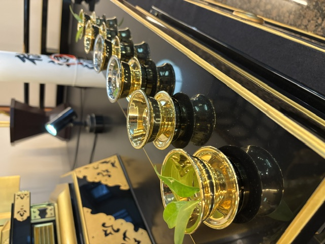

EVENTS
行事を、寺院を知るきっかけに。
年間行事や毎月の定例行事を確認し、参詣のきっかけとしてご活用ください。予定は変更になる場合があります。
ANNUAL EVENTS 2026
年間行事
妙本寺の2026年（令和8年）の行事予定です。
行事への参加を考えている方へ
妙本寺は神戸市灘区原田通3丁目1-1にあります。JR灘駅北口・阪急王子公園駅から徒歩約5分です。初めての方も、来寺前に次の案内をご確認ください。
定例の予定
| 行事 | 日程 | 時間 |
|---|---|---|
| 一日御経日 | 原則 毎月1日 | 午後1時 |
| 広布唱題会 | 原則 第1日曜日 | 午前9時 |
| 唱題行 | 土曜日 | 午前11時 |
| 唱題行 | 日曜日 | 午前9時30分 |
| 寺院清掃 | 原則 第2土曜日 | 午後1時30分 |
| 御逮夜御講 | 原則 第2土曜日 | 午後6時 |
| 御報恩御講 | 原則 第2日曜日 | 午後1時 |
| 青年部・少年部合同部会 | 毎月 御講日 | 午前11時30分（御講前） |
※7月の唱題行は、カレンダー記載では月曜〜土曜 午前11時、第1日曜は広布唱題会 午前9時、その他の日曜は午前9時30分です。
2026年 主な行事
| 日程 | 行事 | 時間・場所 |
|---|---|---|
| 1月1日 | 元朝勤行 | 午前0時 |
| 1月1日 | 広布唱題会 | 午前9時 |
| 1月1日 | 元旦勤行 | 午前11時・午後1時 |
| 1月2日 | 元旦勤行 | 午後1時 |
| 1月2日〜3日 | 法華講新年初登山 | 総本山 |
| 2月3日 | 節分会 | 午後6時 |
| 2月16日 | 宗祖御誕生会 | 午後1時 |
| 3月15日 | 春季総登山・法華講連合会総会 | — |
| 3月20日 | 春季彼岸会 | 午前10時・午後1時 |
| 3月21日 | 春季彼岸会 | 午後1時 |
| 4月29日 | 宗旨建立会 | 午後1時 |
| 5月6日 | 妙本寺重宝虫払法要 | 午後1時 |
| 5月6日〜7日 | 御霊宝虫払大法会 | 総本山 |
| 5月29日 | 兵庫地方部総会 | 於 法法恩寺 |
| 8月13日 | 盂蘭盆会 | 午後1時 |
| 8月15日 | 盂蘭盆会 | 午前10時・午後1時 |
| 9月18日〜19日 | 寛師会 | 総本山 |
| 9月22日 | 秋季彼岸会 | 午後1時 |
| 9月23日 | 秋季彼岸会 | 午前10時・午後1時 |
| 10月25日 | 御会式御逮夜会 | 午後2時 |
| 11月15日 | 日師会 | 午後1時 |
| 11月20日〜21日 | 御大会 | 総本山 |
| 11月28日 | 支部総登山 | — |
SHARE
このページを家族や身近な方へ
必要としている方へ、このページのURLを共有できます。